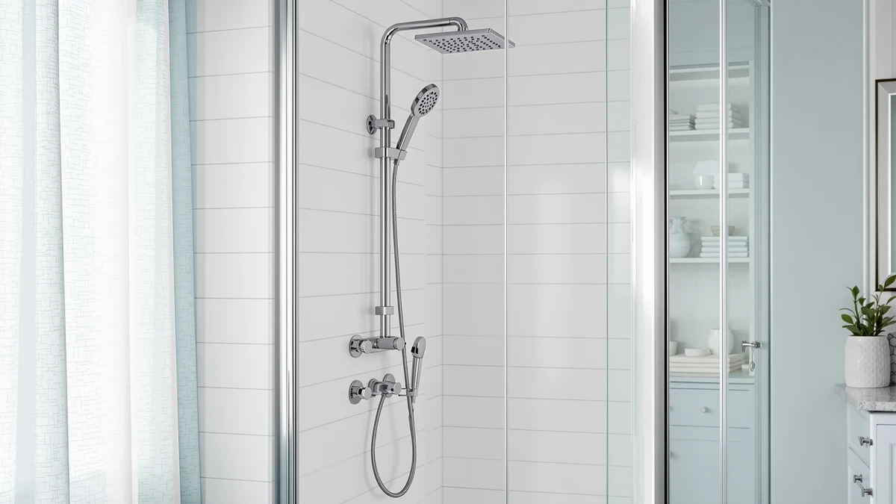

How to Clean and Descale a Shower Panel (2026)
Prices and picks verified as of September 2026. Independent, reader-supported reviews.


Things to Know Before You Buy
- White vinegar dissolves mineral scale without attacking the chrome, stainless, or ABS finish most shower panels use.
- Jets clog fastest in hard water areas, so a monthly descale keeps pressure even across all five spray modes.
- Bleach and abrasive scouring pads are the two most common ways owners damage a panel's finish and rubber seals.
- Digital displays and control seams need a damp cloth, not a direct spray, to avoid moisture getting behind the panel.
- A full clean and descale takes about 35 minutes and costs roughly $15 in supplies you likely already have.
Knowing how to clean a shower panel properly is the difference between a tower that sprays evenly for years and one that loses half its jets to scale within a season. Every panel with a rainfall head, body jets, and a handheld wand shares the same weak point: narrow nozzle openings that mineral deposits can choke off fast, especially if your water supply runs hard.
The good news is that clearing that buildup does not require harsh chemicals or a plumber. A vinegar-based soak breaks down calcium and lime scale on contact, and a soft brush handles the rest without scratching the panel's chrome, stainless, or acrylic finish. The steps below cover the full process, from the first rinse to the final buff, plus the mistakes that shorten a panel's lifespan.
What You'll Need
- Supplies: white vinegar, baking soda, and mild dish soap
- Tools: a soft-bristle brush and a microfiber cloth
Step 1: Clear the panel and rinse away loose residue
Pull any bottles, razors, or loofahs off the panel's shelf so you can reach every surface, including the gaps around the control knobs. Turn the shower to warm and let it run across the full panel body for about a minute. This loosens surface soap scum and body oil before you introduce any cleaner, so the vinegar in the next step goes straight to work on mineral scale instead of getting used up on grime.
While the water runs, take a quick look at each jet and nozzle. Note which ones spray weak or crooked. Those are the spots that need the longest soak in step three, and marking them now saves time later.
Step 2: Mix a vinegar descaling solution
Fill a spray bottle with equal parts white vinegar and warm water. The acetic acid in vinegar breaks down calcium and lime scale on contact, and it works on the same chemistry whether your panel is chrome, stainless steel, or a painted ABS finish. Skip bleach here. Bleach does nothing to dissolve mineral deposits and it degrades rubber gaskets over repeated use.
If your local water is especially hard, mix the solution stronger, up to two parts vinegar to one part water, for the jets you flagged in step one. Pour a portion into a small sandwich bag for the soak in the next step, and keep the rest in the spray bottle for the panel body.
Step 3: Soak and scrub the jets and nozzles
Fill the sandwich bag with your vinegar solution, slip it over each body jet or the rainfall head, and secure it with a rubber band so the nozzles sit fully submerged. Leave it in place for 15 to 20 minutes. For nozzles that were already spraying weak or crooked in step one, extend the soak to 30 minutes.
Remove the bag and scrub each nozzle opening with a soft-bristle brush, working in small circles to loosen the softened deposits without widening the hole. A toothbrush works well for tight body jets. Avoid picking at the openings with a pin or paperclip. That habit scratches the nozzle and can make the spray pattern worse over time.
Run the water briefly after scrubbing to check the spray pattern on each jet. If a nozzle is still weak, repeat the soak once more before moving on.
Step 4: Clean the panel body and control knobs
Spray the diluted vinegar solution onto a microfiber cloth rather than directly onto the panel, then wipe down the full surface, including the control knobs and any seams around the temperature display. Keeping the spray on the cloth instead of the panel limits how much moisture can work its way behind the display or into the wall mount.
For water spots or soap film that vinegar alone does not lift, mix baking soda with a few drops of water into a light paste and rub it gently over the spot with the cloth. Rinse that section right away. Baking soda is mildly abrasive, and leaving it to dry on the finish can leave a faint haze on darker finishes like matte black or brushed gold.
Step 5: Rinse thoroughly and buff dry
Turn the shower on and let it run across every jet and the panel body for two to three minutes to flush out any leftover vinegar or baking soda residue. Leaving acidic residue on the finish, even a mild one, can dull chrome and stainless surfaces if it sits and dries repeatedly.
Once the rinse is done, dry the entire panel with a clean microfiber cloth, working from the top down. Buffing the surface dry rather than letting it air-dry is what prevents new hard water spots from forming, since spots form as mineral-laden water evaporates in place. Finish by wiping the control knobs and display seams one more time to catch any drips that ran down during the rinse.
Common Mistakes to Avoid
Reaching for bleach is the mistake that causes the most damage. Bleach does not dissolve mineral scale the way vinegar does, and repeated use breaks down the rubber gaskets that seal the jets, leading to slow leaks behind the panel. Abrasive scouring pads cause similar harm on brushed nickel and matte black finishes, leaving fine scratches that trap grime faster than before.
Picking at clogged nozzles with a pin, paperclip, or metal skewer is another frequent shortcut that backfires. It widens the opening unevenly, which turns a weak spray into a crooked one that never sprays straight again. A soft-bristle brush or toothbrush clears the same deposits without reshaping the hole.
Spraying cleaner directly at the control panel or digital display is a third common error. Moisture that gets behind the display housing can corrode the electronics on LED panels over time. Dampen a cloth first and wipe the display instead of spraying it directly.
Finally, waiting until pressure drops noticeably before descaling makes the job harder than it needs to be. Scale that has months to harden takes longer to soak loose than scale caught after a few weeks, so a light monthly clean beats an occasional deep one.
Our Top Picks
If your current panel is scaled beyond what a vinegar soak can fix, or the jets never sprayed evenly to begin with, these three options are worth a look based on our research into current shower panel towers.

Editor's Pick
HSYLYPA LED 5-in-1 Shower Panel
Five spray modes and a straightforward nozzle layout that stays easy to keep scale-free with routine soaking.
$211.99
Check Price on Amazon
Best Value
ROVATE 4-in-1 Rainfall Waterfall Shower
A rainfall and waterfall combo priced close to the panels above it, with a stainless finish that wipes clean without much effort.
$209.99
Check Price on Amazon
Premium Choice
MENATT 5-in-1 LED Shower Panel
A lit temperature display and multiple body jets for buyers who want the fullest feature set in this price range.
$209.99
Check Price on AmazonFrequently Asked Questions
How often should you clean and descale a shower panel?
In hard water areas, descale the jets every two to four weeks. In soft water areas, every two to three months is usually enough to keep pressure steady.
Can you use bleach to clean a shower panel?
Skip bleach. It degrades rubber gaskets and can dull the chrome or stainless finish over time, while white vinegar and mild dish soap clear scale and soap scum without the damage.
Why do the jets on a shower panel lose pressure?
Hard water leaves mineral deposits inside the nozzle openings. As those deposits build up, the passage narrows and the spray weakens or turns into an uneven dribble.
Is it safe to get the control panel wet during cleaning?
Light splashing during normal shower use is fine, but avoid spraying cleaner directly at the digital display or seams. Dampen a cloth first and wipe instead of spraying.
What if the jets are still clogged after descaling?
Soak the stubborn nozzles a second time for a full 30 minutes, then work loose the remaining deposits with a soft toothbrush instead of a pin or metal tool that can scratch the opening.
Verdict
Learning how to clean a shower panel and stick to a regular descaling routine is the cheapest way to keep a $200 tower spraying like new for years instead of months. Vinegar handles the mineral scale, a soft brush clears the nozzles without scratching them, and a microfiber cloth keeps water spots from forming on chrome, stainless, or matte finishes. The whole process runs about 35 minutes and costs roughly $15 in supplies most households already stock.
If your panel is already past the point a soak and scrub can fix, our top pick above, the HSYLYPA LED 5-in-1, offers five spray modes and a nozzle layout that responds well to this same maintenance routine going forward. Whichever panel you own, a monthly clean beats a rebuild every time.